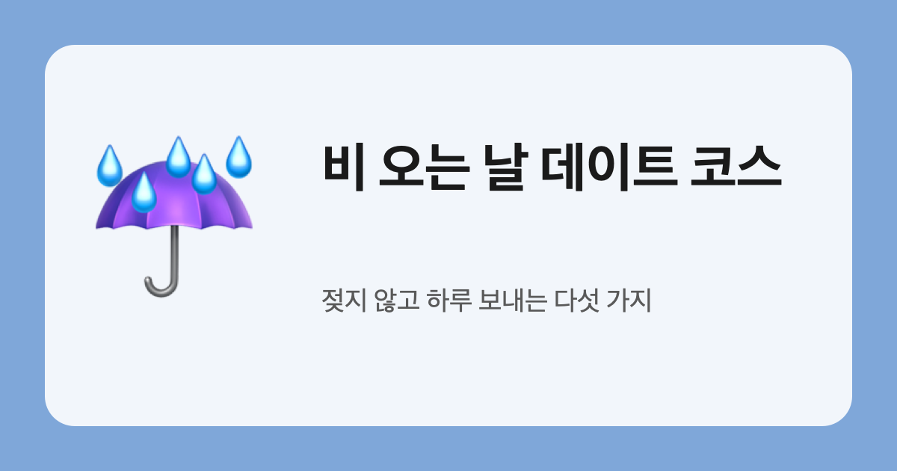

비 오는 날 데이트 코스
우산 접고 들어가서 하루를 보내는 다섯 가지.
- 전시 한 곳
실내라 비 걱정이 없어요. 다 보고 나면 이야깃거리가 생겨요. - 보드게임 카페
두세 시간이 금방 가요. 처음 하는 게임 하나는 꼭 골라 보기. - 서점 데이트
서로에게 책 한 권씩 골라 주기. 이유는 계산대 앞에서 공개. - 뜨끈한 국물 저녁
칼국수·수제비·샤브샤브처럼 김이 나는 메뉴로. - 집에서 영화 + 간단 요리
둘이 같이 만드는 떡볶이나 김치볶음밥이면 충분해요.
비 소리가 좋다면 창가 자리를 먼저 찾아보세요.